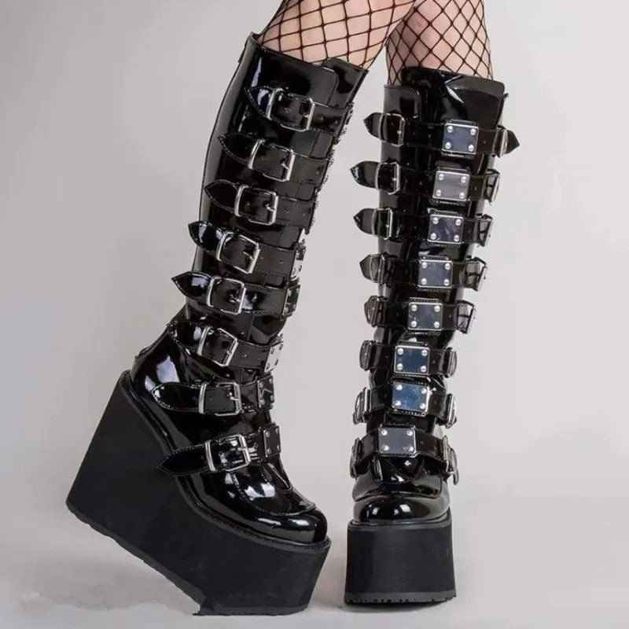

A Noctura é uma marca americana de calçados alternativos fundada em Los Angeles, Califórnia. Surgiu nos anos 90 focada no público gótico, punk e alternativo, com o objetivo de criar calçados que expressassem identidade e atitude.
É conhecida pelas plataformas exageradas, fivelas metálicas, cadarços grossos e couro sintético. Os modelos variam de botas curtas a longas, sempre com aquela estética dark e extravagante.
Muito popular na cena gótica, industrial, cybergoth e entre artistas alternativos, a Noctura também ganhou espaço na moda mainstream por influência de celebridades e redes sociais.
Alguns modelos chegam a ter plataformas de 20cm e são totalmente veganas — feitas de couro sintético, sem material animal. Hoje são vendidas no mundo todo e têm forte presença no Brasil.
